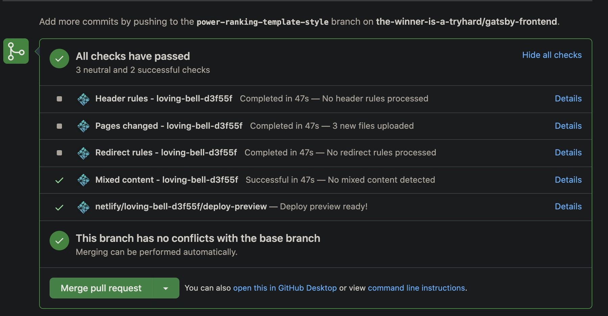
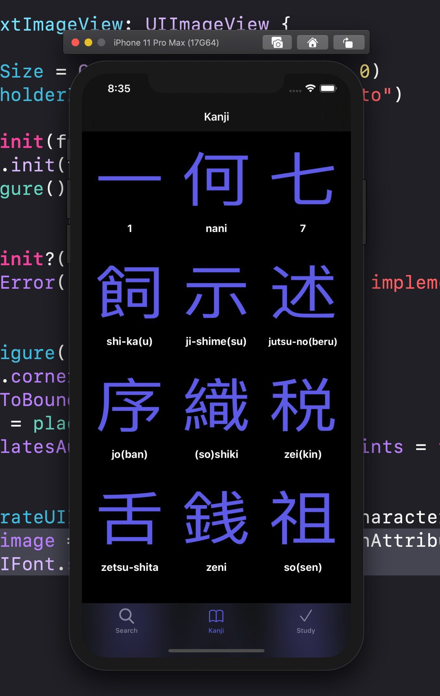
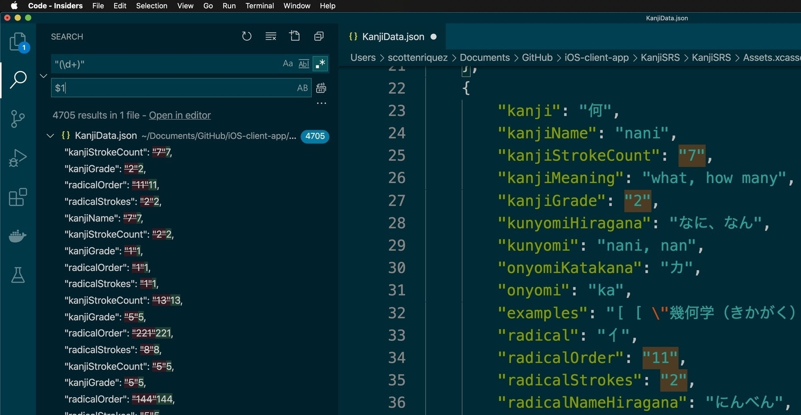
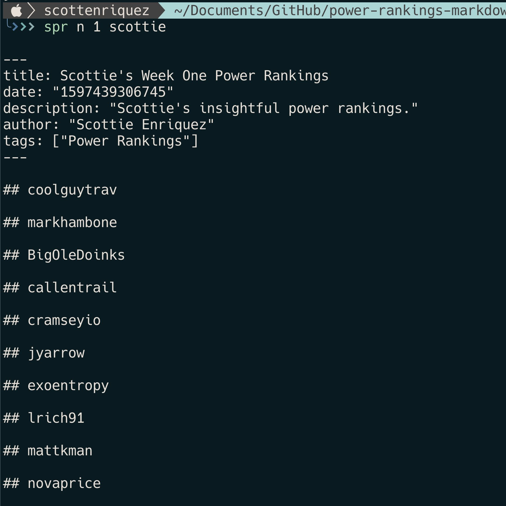

The out of the box Netlify CI/CD features and GitHub pull request integration with deploy previews are fantastic.

I made some good progress on my app this evening. I’ve still got a long way to go before I feel truly comfortable doing iOS development.


I’ve been using Visual Studio Code for text transformation that I might have previously written a script to do. I just learned that replace functionality supports capture groups in regular expressions. For example, replacing "(\d+)" with $1.

🏈 Working on a little CLI tool to generate Markdown for power rankings populated with Sleeper fantasy football data for my league’s new Gatsby site. I’m already loving our decision to leave ESPN.

📝 I’ve felt particularly fatigued with notifications lately. Endless IMs, emails, group chats, text messages, phone calls, etc. I need to not be so obsessive about getting my notifications cleared. I’m also still working on how to filter the noise too.
“Have you heard? I’m not worth my weight in words.” 🎵 Mirror Freak by Good Morning
🏈 Seems like it’s only a matter of time now before one of the P5 conferences officially announces the cancelation or postponement of college football. It’s the right call but still a tough pill to swallow for so many reasons.
I’ve felt myself withdrawing more and more from the internet due to constant, crippling negativity. From incendiary Reddit threads about pointless fandoms to the unbridled elitism of StackOverflow to the rampant distortion of public opinion by malicious bots on Twitter, even just being a bystander has started to bum me out. At first, I didn’t know if there was much point to microblogging since I already have a dedicated blog. I’m still very new to this concept but excited for something different.